DAY 110.23 SAT
鳥取市・八頭町
時間・集合 確認中
ミニフットパス
鳥取市
- 城下町鳥取 小径コース（仮）
- 因幡・国府 万葉小径コース（仮）
八頭町
- 八頭の白兎伝説コース（仮）
- わかてつ徳丸フルーツの里コース（仮）
フォーラム・交流会鳥取市内
夜のフットパス鳥取市内
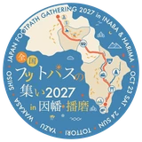
全国フットパスの集い2027 in 因幡・播磨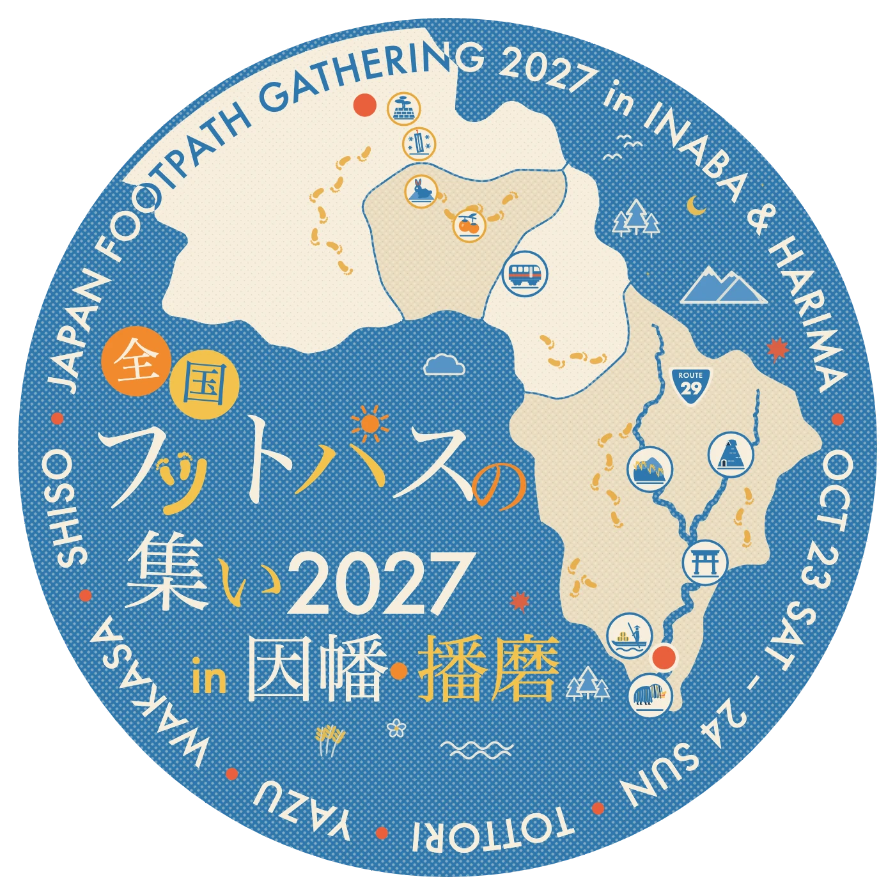
〜フットパスが拓く、人と地域の新しい可能性〜
2027.10.23 SAT10.24 SUN
2027年10月23日（土）・24日（日） 鳥取市・八頭町・若桜町・宍粟市
メイン会場鳥取市総合福祉センター さざんか会館（鳥取駅から徒歩5分）
紹介動画を見る5:29播磨の姫路から、宍粟の峠を越えて、山陰の鳥取へと続く、古の道、因幡街道。
いまは国道29号となり、道に寄り添うように一級河川の揖保川が流れます。かつては高瀬舟が木材や年貢米を積んで川をくだり、大正時代からは波賀の山あいを森林鉄道が走りました。
2016年、沿線の人々が県境を越えて手を結び、この道を「新因幡ライン」と名づけました。いまでは、国土交通省の日本風景街道のひとつにも数えられています。
ABOUT
テーマ歩くことから、
地域の未来が動き出す
全国でフットパスを歩く人、つくる人が集う「全国フットパスの集い」。2027年は、因幡街道（国道29号）でつながる鳥取県と兵庫県が舞台です。
1日目は鳥取市と八頭町で、ミニフットパスやフォーラムで交流を深め、夜は鳥取のまちを歩きます。2日目は国道29号を南へ。若桜町と宍粟市の6つのコースに分かれて歩きます。
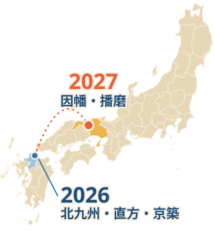
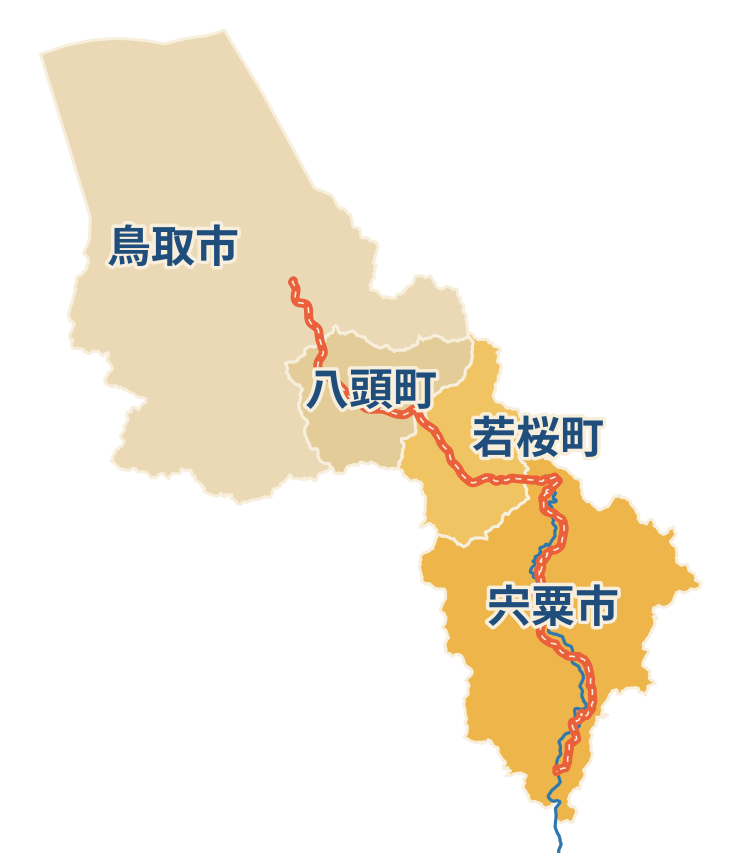
PROGRAM
DAY 110.23 SAT
時間・集合 確認中
ミニフットパス
鳥取市
八頭町
フォーラム・交流会鳥取市内
夜のフットパス鳥取市内
DAY 210.24 SUN
鳥取から国道29号を南へ。6つのコースに分かれて歩きます。
DAY 2 COURSES
若桜町と宍粟市の6つのコースに分かれて歩きます。
コース名は仮の名前です。
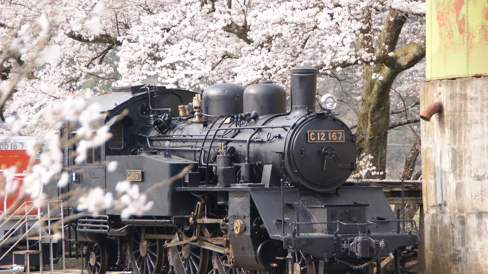
鳥取県八頭郡 若桜町
峠の手前の宿場町。昭和初期のレトロな駅舎にSLが似合う若桜鉄道の「若桜駅」や、宿場の風情を残す「カリヤ通り」を訪れます。
戸倉峠を越えて、兵庫県へ
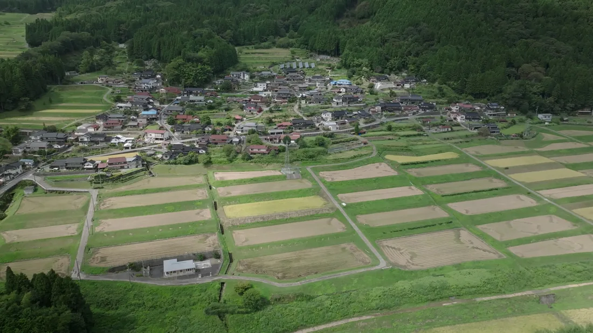
宍粟市波賀町 飯見
山あいの飯見の里では、湧き水だけで潤う171枚の棚田が斜面に連なります。木材を運んだ森林鉄道の跡を歩き、あぜ道をのぼっていきます。
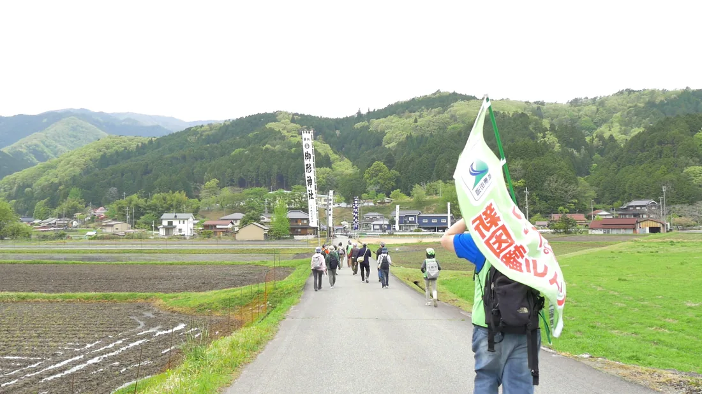
宍粟市一宮町 三方町
揖保川上流の三方の里。縄文の昔から人が住みつづけた遺跡、室町時代の社殿を守る神社、農村歌舞伎の舞台をめぐり、何千年にもおよぶ暮らしの跡をたどります。
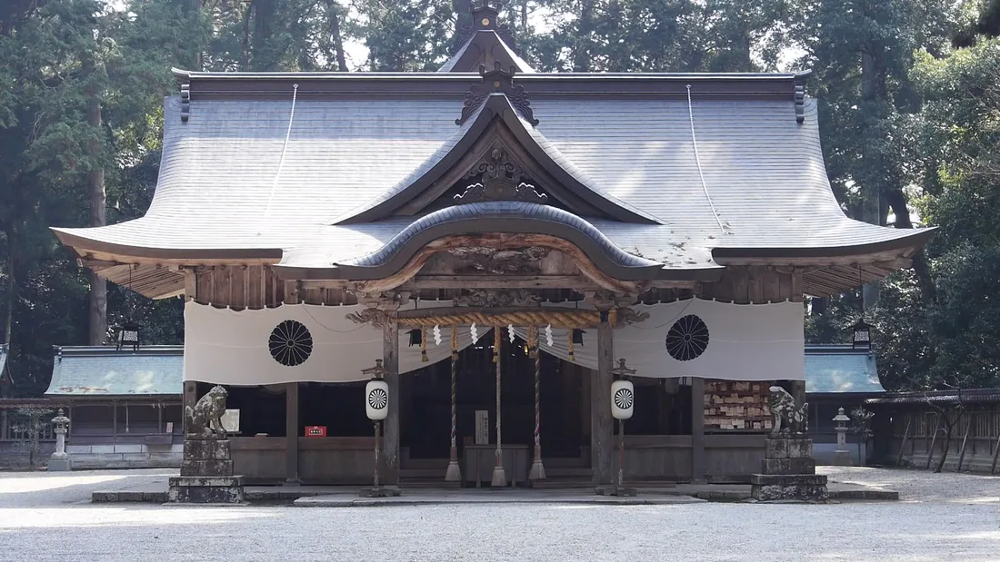
宍粟市一宮町 須行名
播磨国一宮、伊和神社。秋祭りの日には、担ぎ手たちの掛け声と屋台練りの熱気に境内が沸き立ちます。お社から村々へ、屋台が練り歩いた道をゆっくりと歩きます。
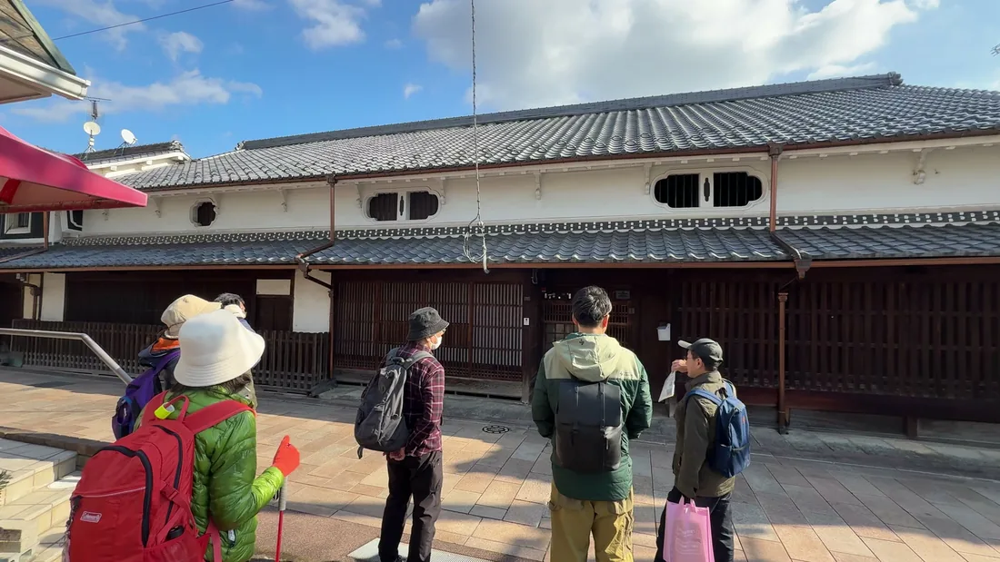
宍粟市山崎町
谷がひらけると城下町の山崎。高瀬舟が荷を積んだ船着場の跡や因幡街道の道しるべが、往時のにぎわいをしのばせます。酒蔵が並ぶ通りを抜け、城下町の面影をたどります。
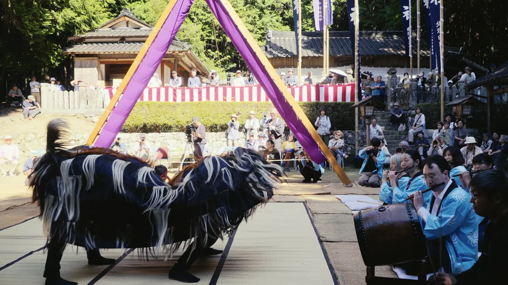
宍粟市山崎町 宇原・川戸
さらに川をくだった宇原の里。丘のふもとの古墳をながめながら川風の道を行くと、360年にわたって受け継がれてきた宇原獅子舞が迎えてくれます。
FOOTPATH MAPMAKER
大会に向けて、実行委員会では、地図アプリ「フットパスマップメーカー」を開発しています。コースのマップづくりから、歩くときの案内やスタンプラリーまで、これひとつで。
地図の見た目は「いつもの地図」「白の町」「藍の町」の3つ。
スマートフォン・パソコンのブラウザで使えます。
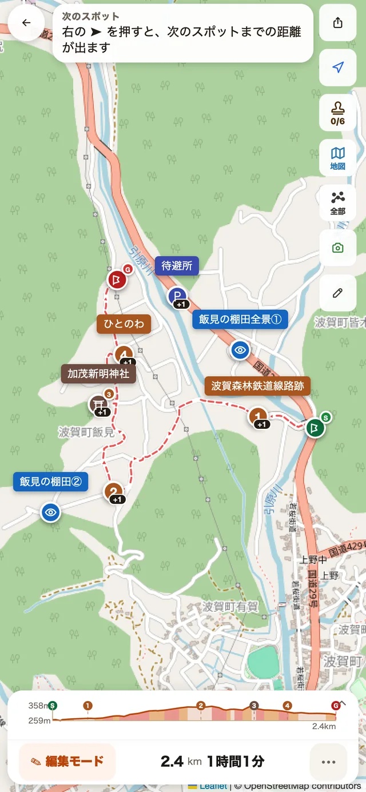
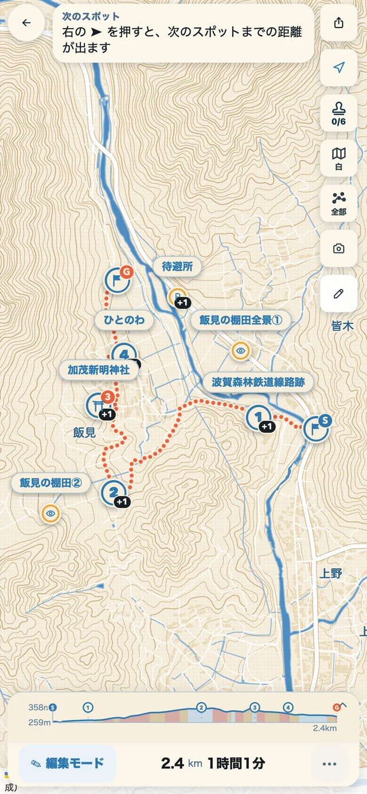
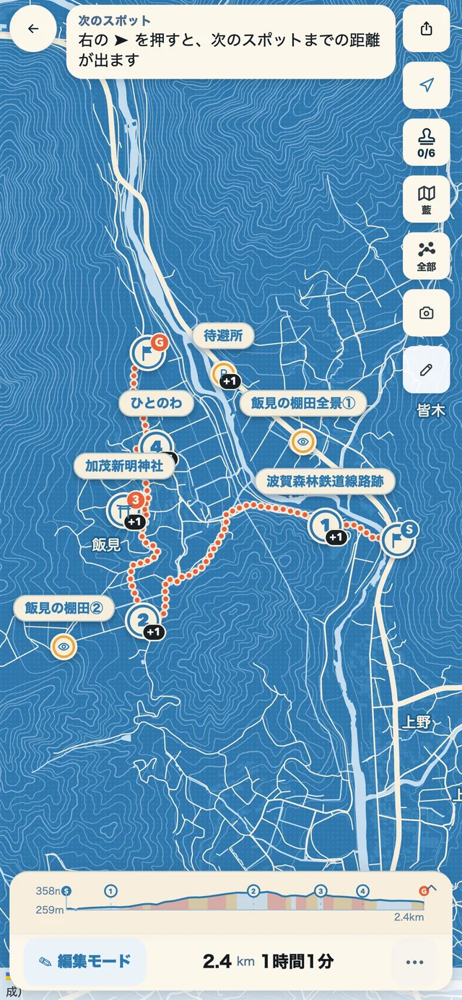
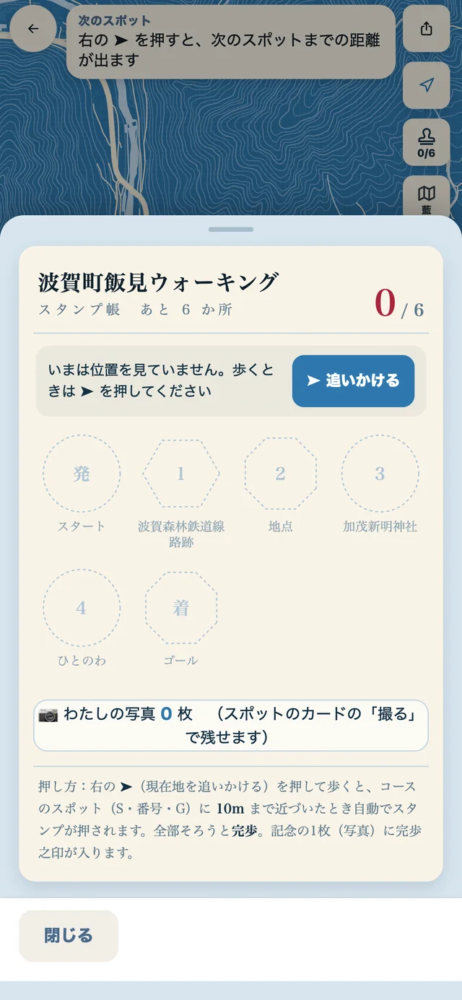
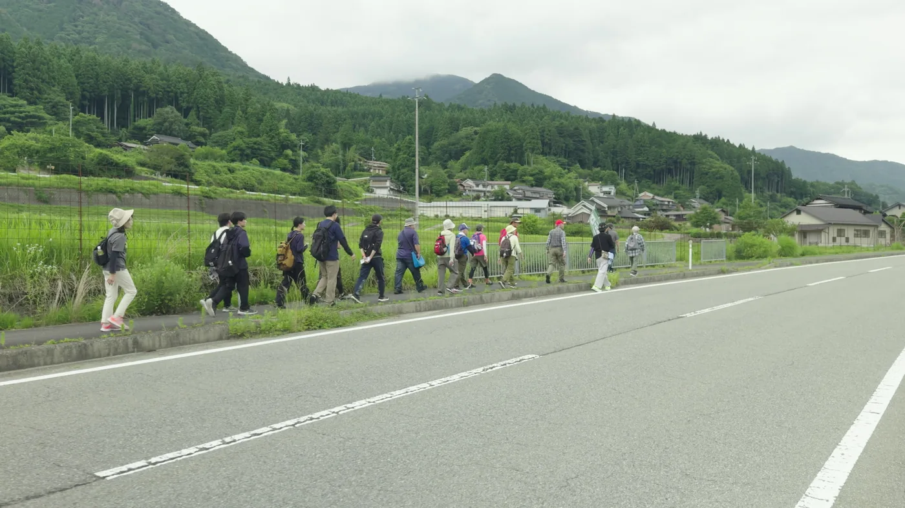
かつて人と荷が行き交った古の道は、
いま、人と人が出会う道になりました。この道を、地元の人たちと歩いて十年あまり。
そこで出会った風景と、人と、食べものを、
全国のみなさんと分かち合います。
ACCESS & STAY
メイン会場
鳥取市富安2丁目 鳥取駅から徒歩5分
地図で見る2日目の移動
鳥取市から宍粟市への移動は、貸切バスを用意します。バスの利用には、別途費用をいただきます（鳥取駅前〜姫路駅前、1人3,000円を予定）。
解散のあと
姫路駅までの送迎バスに乗られる方は、宍粟市の各地から姫路駅に15:30ごろ到着の予定です。
宿泊
宿泊施設の紹介など、情報提供はしますが、予約は各自でお願いします。
ご注意
開催コースは予告なく変更されることがあります。コース名・時間は仮のもので、決まりしだいこのページでお知らせします。